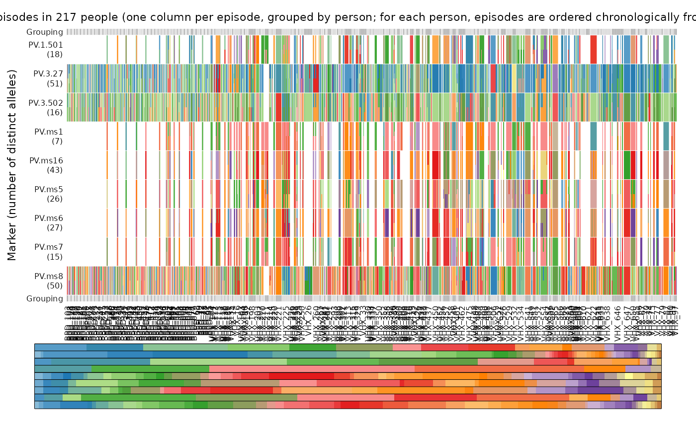
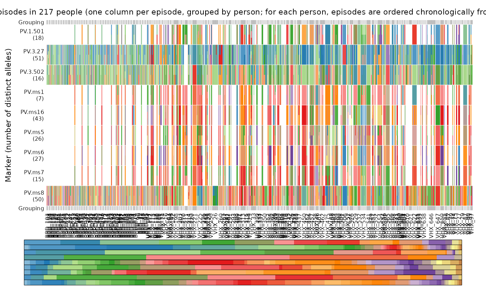

Plots the alleles (colours), which are observed in different episodes (rows), on different markers (columns), where episodes are grouped by patient. The patients and per-patient episodes are plotted from bottom to top. If more than one allele is detected per episode per marker, the corresponding row-column entry is subdivided into different colours. The legend depicts the alleles of the markers as the markers appear from left to right in the main plot. Otherwise stated, the legend is ordered by the order of markers stated on on the horizontal axis of the main plot. The colour scheme is adaptive. It is designed to visually differentiate the alleles as much as possible: the maximum range of qualitative scheme, with contrast of hue between adjacent colours, is always used; the adjacent colours are interpolated only if a given marker has more than 12 alleles. The names of the alleles are printed on top of their colours if marker_annotate.
Arguments
- ys
A nested list of per-patient, per-episode, per-marker allelic data. Specifically, a per-patient list of a per-episode list of a per-marker list of character vectors of observed alleles.
- fs
A per-marker list of numeric vectors of allele frequencies. If NULL (default), for a given marker, only the alleles present in the data are represented in the legend, and each allele is represented equally. Because the colour scheme is adaptive (see introduction), the same allele will have a different colour in a plot of an alternative data list if more or fewer alleles are observed at the given marker across the alternative data list. If fs is specified, all possible alleles are represented and legend areas are proportional to allele frequencies; i.e., common alleles have relatively large legend areas, and rare alleles have relatively small legend areas. Specify fs to fix the colour of a given allele across plots of different data lists, thereby facilitating cross-comparison.
- marker_annotate
Logical. If true (default), the names of the alleles are printed on top of their colours in the legend.
Examples
# Plot example Plasmodium vivax data set
plot_data(ys = ys_VHX_BPD)
plot_data(ys = ys_VHX_BPD, fs = fs_VHX_BPD)
 plot_data(ys = ys_VHX_BPD, fs = fs_VHX_BPD, marker_annotate = FALSE)
plot_data(ys = ys_VHX_BPD, fs = fs_VHX_BPD, marker_annotate = FALSE)
 # Demonstrating the adaptive nature of the colour scheme:
ys <- ys_VHX_BPD["VHX_52"] # A single patient
plot_data(ys, fs = fs_VHX_BPD) # Colours and the legend match plots above

plot_data(ys) # Colours and the legend adapt to alleles detected in VHX_52
# Demonstrating the adaptive nature of the colour scheme:
ys <- ys_VHX_BPD["VHX_52"] # A single patient
plot_data(ys, fs = fs_VHX_BPD) # Colours and the legend match plots above

plot_data(ys) # Colours and the legend adapt to alleles detected in VHX_52